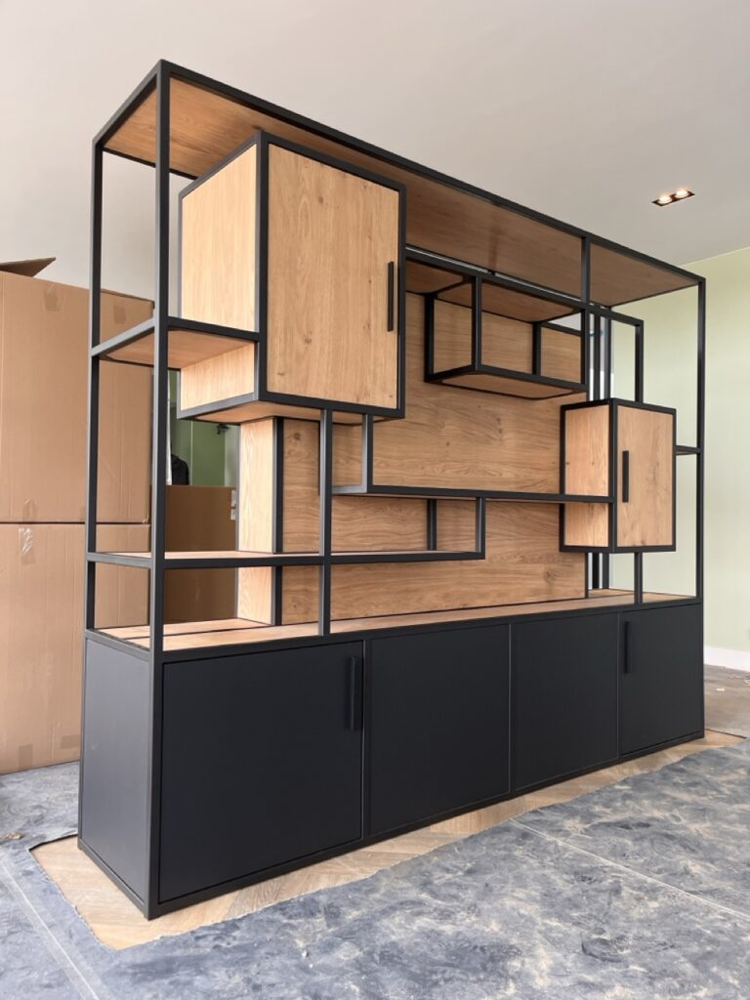

Kasten
Wandkasten, boekenkasten, roomdividers, tv-meubels en keukenkasten. Van staal en hout, met RAL-kleur panelen of verlichting, hangend of zwevend. Altijd op maat van uw muur en uw spullen.
Voor thuis, maar ook voor hotels en restaurants, zoals Hotel de Wereld in Wageningen en Villa Ruimzicht.